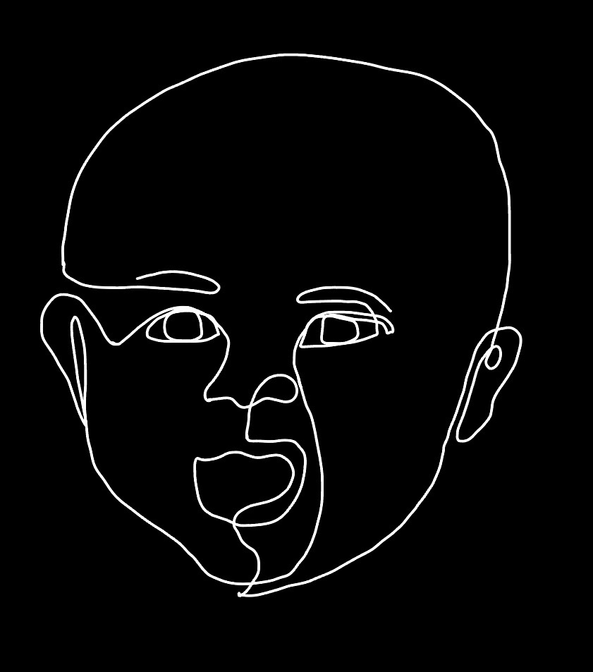

warmth surrounds it's HOT
and it beats, beats, beats
but not one that's yours
in that red-wine sea
can you hear it?
buzz through you like vibrations
as you suspend
tugged by some invisible force
this is you

Birth · II
/* AUDIO: sudden ambient rush, high gentle tone */
/* IMAGE: overexposed white blurring into shapes — light spill */
piercing
white bright, white light
it blurs
there's shapes, faces
turn it off
it's too close
yet too far can you see?
Birth · II
/* AUDIO: newborn cry fading to silence, then soft lullaby */
/* IMAGE: open mouth, abstracted or hands holding something small */
eruption
sounds bursts out
listen now
those balloons in your chest
rise and fall
in a loud world
you are still heard
in a rush
in warm arms there, there, there
Birth · III
/* AUDIO: soft laughter, warm room ambience */
/* IMAGE: close-up of laughing face (adult, looking down at you) b&w, warm light */
a face above yours creases
and shines
you have learned something
enormous
without words for it:
that your face
can change
the weather
in someone else's eyes
Birth · IV
/* AUDIO: carpet texture sounds, distant voices, movement */
/* IMAGE: worm's-eye view of a room — chair legs, carpet, a patch of light across the floor */
the floor is an entire country
dust motes.
the underside of chairs.
a shoe that smells
of somewhere else.
your body surprises you
daily—
hands, knees, the forward lurch
that is almost standing almost, almost
Birth · V
/* AUDIO: hush of a room, then one syllable, then gasps/delight */
/* IMAGE: open hand, fingers spread — or a mouth mid-word, black and white */
a syllable escapes— clumsy
imprecise
miraculous
everyone in the room
goes still
then the word is given back to you
repeated, celebrated,
a door that you
didn't know
you'd opened
Birth · Threshold
/* AUDIO: happy birthday being sung, off-key and warm */
/* IMAGE: birthday cake with lit candles extreme close-up, candlelight glow faces blurred in background */
a room full of people
singing
you don't know the words yet
but the song is for you
entirely for you
this is what it feels like
to be celebrated
for the simple act
of arriving
Teen Years · I
/* AUDIO: school hall noise, distant chatter, locker doors */
/* IMAGE: mirror reflection, face cut off or fragmented — tile/glass distortion. b&w, high contrast */
your body has changed without asking permission
you see yourself in pieces—
a jaw.
a shoulder.
the length of your hands
which are your father's hands
now, suddenly
you don't know
which version of you
is the true one
Teen Years · II
/* AUDIO: silence punctuated by breath, heartbeat, subtle distortion */
/* IMAGE: fragmented body collage — magazine-cut aesthetic, b&w no full face, only parts */
there are magazines
that know exactly what is wrong with you
PE class. changing rooms.
the particular silence
of a swimming pool
when you walk in
you have started
to look at yourself
the way a critic looks
at something
that disappointed them
Teen Years · II
/* AUDIO: crowded hallway reverb, laughter just out of reach */
/* IMAGE: blurred crowd of students walking away, your POV behind them motion blur, b&w */
a hallway full of people
who all seem to know something you don't
a joke lands
and the laugh ripples out
and you arrive
one beat late
to its warm edge
the invisible wall
has no door
that you can find yet
Teen Years · Loop
/* AUDIO: metronome tick, quiet strain, pencil scratching a list */
/* IMAGE: a handwritten list with items crossed out clinical, severe, b&w */
rules: no. not that. less.
you wait
for the world
to transform
as promised
the world
does not transform
you write another list
/* HARLOWE: (visited: "T04") to alter text on repeat visits */
Teen Years · III
/* AUDIO: muffled music through walls, voices overlapping, too loud */
/* IMAGE: out-of-focus party lights or hands holding cups in the dark extreme bokeh, b&w */
the music is too loud
to hear yourself think
which is, in fact, the point
three doors
open at once
all of them
interesting all of them mistakes
Teen Years · Regret
/* AUDIO: sudden silence after words, then low laugh */
/* IMAGE: someone's expression mid-reaction — hand to mouth eyes wide, b&w */
you say it
and the sentence
hangs there like a dropped glass
still falling
everyone turns
and the turning
takes about seven hundred years
you will still hear this
at 3am
in a decade
Teen Years · Regret
/* AUDIO: message sent whoosh, then silence, then read-receipt ping */
/* IMAGE: phone screen glowing in the dark message on left: read. no reply. b&w */
sent sent
read
the three dots appear
then disappear
then nothing
for three days
then forever
Teen Years · Regret
/* AUDIO: crowd egging on, then gasps, then silence, then laugh */
it seemed
at the time like a good idea
it seemed, at the time,
like what a person
who wasn't afraid
would do
there is a photograph.
somewhere.
that you cannot destroy
Teen Years · Sanctuary
/* AUDIO: library quiet, page turn, faint music through headphones */
/* IMAGE: books on a shelf or headphones on a desk afternoon light slant, b&w */
here:
the library.
a bedroom with the door shut.
headphones and a world that asked you in
you found something—
a band, a book, a corner of the internet
so obscure
it felt like yours
this is where
you started to become
yourself
Teen Years · Threshold
/* AUDIO: school bell, then silence, then outside air — wind, birds */
/* IMAGE: back of a figure walking away from a building, last day — long shadow, b&w */
the building shrinks
behind you
everything you were
inside those walls
will start, right now,
to dissolve
you carry the cringe,
the quiet rooms,
the almost-fitting-in— a small suitcase for the long walk forward
Adulthood · Hub
/* AUDIO: empty room resonance — footsteps on bare floor, distant traffic */
/* IMAGE: empty room — bare walls one window, afternoon light cardboard box in corner. b&w. */
a room that is entirely yours
and entirely strange
the silence here
is a different shape
than any silence
you have known
three doors.
no rush.
/* HARLOWE: hub passage — player returns here between decisions */
/* IMAGE: spreadsheet or receipts spread on a table — numbers visible but blurred one red figure, b&w */
rent
electricity
the subscription you forgot about
the number at the bottom
is smaller
than the number at the top
this is, apparently,
how it works for everyone
apparently
Adulthood · Love
/* AUDIO: phone ringing, then voice — soft, familiar */
/* IMAGE: two people in a kitchen not looking at the camera — ordinary, warm, b&w */
you don't know
if it's forever
you don't need to yet
what you know is:
their name in your mouth
is warm
you choose them
today and then again tomorrow
and so far
that's enough
Adulthood · Scale
/* AUDIO: city hum, distant traffic, a siren fading, wind */
/* IMAGE: window looking out over rooftops / city at dusk figure silhouette from behind. b&w. */
from here
you can see
how large everything is
every lit window
a different life
being lived
at the same time
as yours
you could move.
you could stay.
both are terrifying
Adulthood · Roots
/* AUDIO: pen scratching paper, notary's quiet instructions, door key in lock */
/* IMAGE: hand signing a document close-up on the pen tip and paper very high contrast, b&w */
you sign your name again and again and here and here too
somewhere in the paperwork
is the fact
that you now own
a small piece
of the earth
it is disguised
as a mortgage
Adulthood · Work
/* AUDIO: office ambience vs. open air — layers cross */
/* IMAGE: two paths implied — a desk and a door. or a T-junction in a corridor one lit, one dark. b&w. */
there is the safe thing
and there is the thing
that makes your hands
go strange and light
when you think about it
at night you have been building toward something you are not sure what
both roads are real.
both roads go forward.
/* HARLOWE: both paths → A08, but set a $career variable to track choice */
Adulthood · Promise
/* AUDIO: string quartet far away, the room before the ceremony */
/* IMAGE: two hands, fingers interlocked very close, lit from one side b&w, all focus on the hands */
it is strangely quiet
for such a large thing
you are about to promise
something
to someone
who is also afraid
the room is full
but you are
somehow alone with them
in the middle of it
this is the feeling.
Tuesday
the kettle
the window
the small familiar
weight of a routine you built yourself
in the other room
something moves
that is also a person
who started
the way you started— dark, warm, not yet knowing
outside the window
the garden is always growing
The End
you stay
the garden keeps growing
without you
having to do anything
this, too,
is a kind of answer